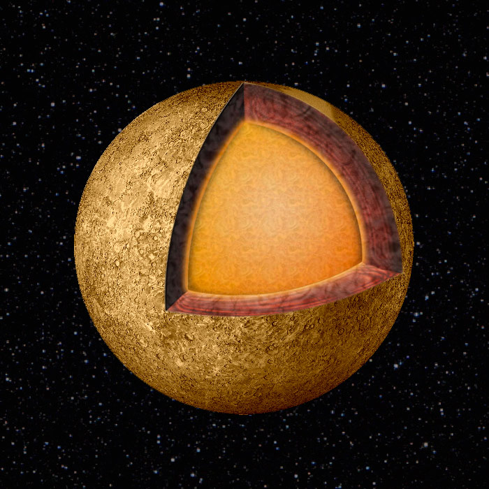

Меркурий — самая маленькая и самая близкая к Солнцу планета. Одна из теорий утверждает, что в начале формирования Солнечной системы Меркурий был спутником Венеры. Меркурий является самой быстрой планетой Солнечной системы. Солнечные сутки на Меркурии составляют 176 земных.